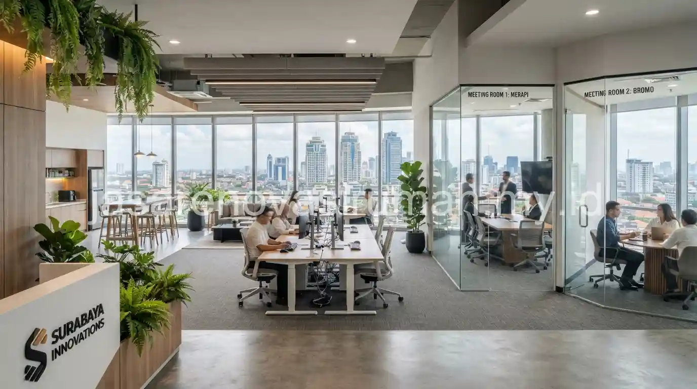
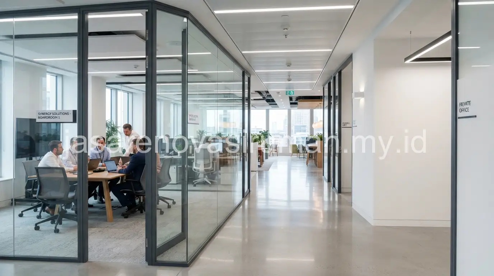

Jasa fit-out kantor Surabaya di kawasan CBD umumnya menggabungkan sekat kaca dan partisi gypsum untuk membagi ruang kerja secara fungsional, dilengkapi pengaturan akustik ruangan dan pencahayaan LED kerja yang mendukung produktivitas tim sehari-hari. Kebutuhan fit-out kantor di kawasan bisnis seperti ini cenderung mengutamakan efisiensi ruang sekaligus kesan profesional yang mencerminkan identitas perusahaan kepada klien yang berkunjung.
Apa Perbedaan Sekat Kaca dan Partisi Gypsum untuk Ruang Kantor?
Sekat kaca memberikan kesan terbuka dan modern dengan tetap menjaga privasi visual terbatas, sementara partisi gypsum lebih unggul dalam hal privasi suara dan fleksibilitas dari sisi biaya.
Berikut perbandingan karakteristik kedua jenis sekat tersebut:
| Aspek | Sekat Kaca | Partisi Gypsum |
|---|---|---|
| Kesan visual | Terbuka, modern, terang | Solid, lebih privat secara visual |
| Peredaman suara | Kurang optimal tanpa lapisan tambahan | Lebih baik, terutama dengan insulasi di dalamnya |
| Biaya | Relatif lebih tinggi | Lebih ekonomis untuk area luas |
| Fleksibilitas | Memberi pencahayaan alami antar ruang | Mudah dipasangi rak atau elemen dinding tambahan |
Pada praktiknya, banyak kantor menggabungkan kedua jenis sekat ini, misalnya menggunakan kaca untuk ruang meeting agar terlihat profesional dan terbuka, sementara partisi gypsum digunakan untuk ruang kerja individu yang membutuhkan privasi suara lebih baik, seperti ruang HR atau ruang panggilan telepon.
Bagaimana Mengatur Akustik Ruangan agar Kantor Tidak Bising?
Pengaturan akustik yang baik melibatkan kombinasi material peredam suara pada plafon, dinding, dan lantai, terutama pada area dengan aktivitas tinggi seperti ruang meeting atau area kerja bersama (open space).
Beberapa langkah yang bisa diterapkan untuk mengelola akustik ruangan kantor:
- Gunakan plafon akustik dengan material berpori yang mampu menyerap sebagian gelombang suara.
- Tambahkan panel akustik pada dinding ruang meeting untuk mengurangi gema saat diskusi berlangsung.
- Pertimbangkan penggunaan karpet tile pada area open space untuk mengurangi suara langkah kaki dan gesekan kursi.
- Pisahkan area yang membutuhkan konsentrasi tinggi dari area yang cenderung ramai seperti pantry atau ruang istirahat.
Akustik yang dikelola dengan baik membantu menjaga fokus karyawan, terutama pada kantor dengan konsep open plan yang semakin umum diterapkan untuk mendorong kolaborasi tim, namun tetap berisiko menimbulkan kebisingan jika tidak diantisipasi sejak tahap desain.

Pencahayaan Seperti Apa yang Mendukung Produktivitas Kerja di Kantor?
Pencahayaan LED dengan suhu warna netral hingga putih terang umumnya lebih mendukung fokus kerja dibanding cahaya kuning hangat yang lebih cocok untuk area santai.
Beberapa prinsip pencahayaan yang diterapkan pada fit-out kantor produktif:
- Gunakan lampu LED dengan tingkat kecerahan yang cukup di area kerja utama, menghindari pencahayaan yang terlalu redup.
- Manfaatkan cahaya alami dari jendela sebisa mungkin, dengan pengaturan posisi meja kerja yang tidak langsung membelakangi sumber cahaya agar tidak menimbulkan silau pada layar komputer.
- Tambahkan pencahayaan task lighting pada meja kerja individu untuk kebutuhan detail seperti membaca dokumen.
- Gunakan pencahayaan lebih hangat pada area santai atau pantry untuk membedakan suasana dengan area kerja utama.
Perencanaan pencahayaan yang baik ini sebaiknya dipikirkan bersamaan dengan tata letak partisi dan sekat ruangan, karena posisi dinding atau partisi kaca dapat memengaruhi seberapa jauh cahaya alami menjangkau area kerja di bagian dalam kantor.
Bagaimana Proses Serah Terima Fit-Out Kantor yang Baik?
Proses serah terima fit-out kantor sebaiknya melibatkan pengecekan menyeluruh terhadap seluruh item pekerjaan, mulai dari partisi, instalasi listrik, hingga sistem pencahayaan, sebelum dinyatakan selesai oleh kedua pihak.
Berikut gambaran checklist yang umum digunakan saat serah terima fit-out kantor:
| Item Pemeriksaan | Hal yang Dicek |
|---|---|
| Partisi dan sekat | Kerapian pemasangan, tidak ada celah atau retak |
| Instalasi listrik | Seluruh titik lampu dan stop kontak berfungsi normal |
| Sistem pencahayaan | Kesesuaian jenis lampu dengan desain yang disepakati |
| Akustik ruangan | Uji sederhana tingkat kebisingan pada ruang meeting |
| Kebersihan area | Area kerja bebas dari sisa material dan debu konstruksi |
Checklist tertulis seperti ini membantu memastikan tidak ada item pekerjaan yang terlewat sebelum kantor benar-benar siap digunakan untuk operasional harian, sekaligus menjadi acuan jika ditemukan kekurangan yang perlu diperbaiki sebelum masa garansi berakhir.
Kesalahan Umum Saat Melakukan Fit-Out Kantor
Kesalahan yang paling sering terjadi adalah tidak mempertimbangkan kebutuhan akustik sejak awal, sehingga kantor dengan konsep open plan justru menjadi terlalu bising dan mengganggu konsentrasi kerja tim.
Kesalahan lain yang perlu dihindari:
- Menempatkan ruang meeting tanpa sekat kaca atau partisi yang cukup kedap suara di dekat area kerja utama.
- Mengabaikan kapasitas daya listrik untuk kebutuhan peralatan kantor yang terus bertambah.
- Tidak melakukan uji coba pencahayaan sebelum serah terima, sehingga baru terlihat kurang terang setelah kantor mulai beroperasi.
Pada akhirnya, fit-out kantor yang baik di kawasan CBD Surabaya membutuhkan perencanaan sekat, akustik, dan pencahayaan yang saling terintegrasi, bukan dikerjakan secara terpisah tanpa mempertimbangkan kenyamanan kerja secara keseluruhan. Tim kami siap membantu mulai dari konsultasi desain hingga serah terima fit-out kantor Anda dengan checklist yang jelas dan transparan.

Tim Redaksi Arsitektur & Konstruksi
Penulis Profesional & Praktisi Konstruksi
Tim Redaksi Arsitektur & Konstruksi adalah tim penulis profesional yang memiliki ketertarikan mendalam pada dunia arsitektur dan konstruksi. Dengan pengalaman bertahun-tahun mengamati tren renovasi rumah, kami aktif membagikan panduan praktis, tips RAB, dan wawasan seputar material bangunan untuk membantu pemilik rumah mewujudkan hunian impian mereka dengan anggaran yang efisien.